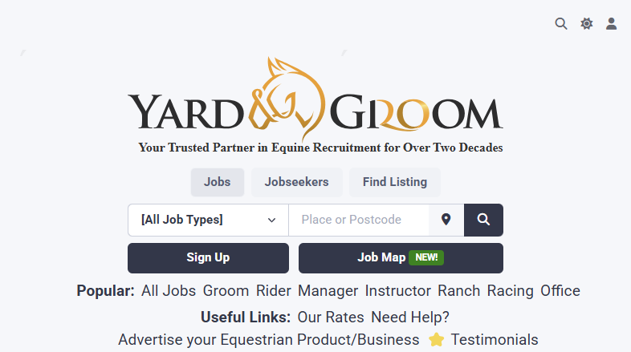
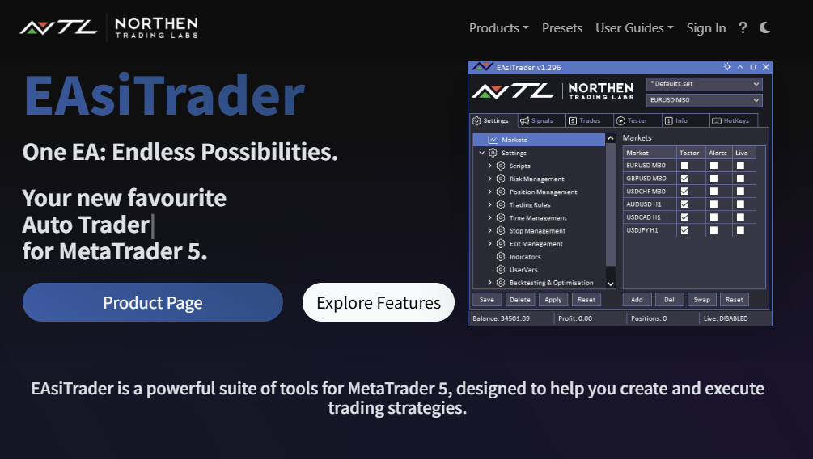
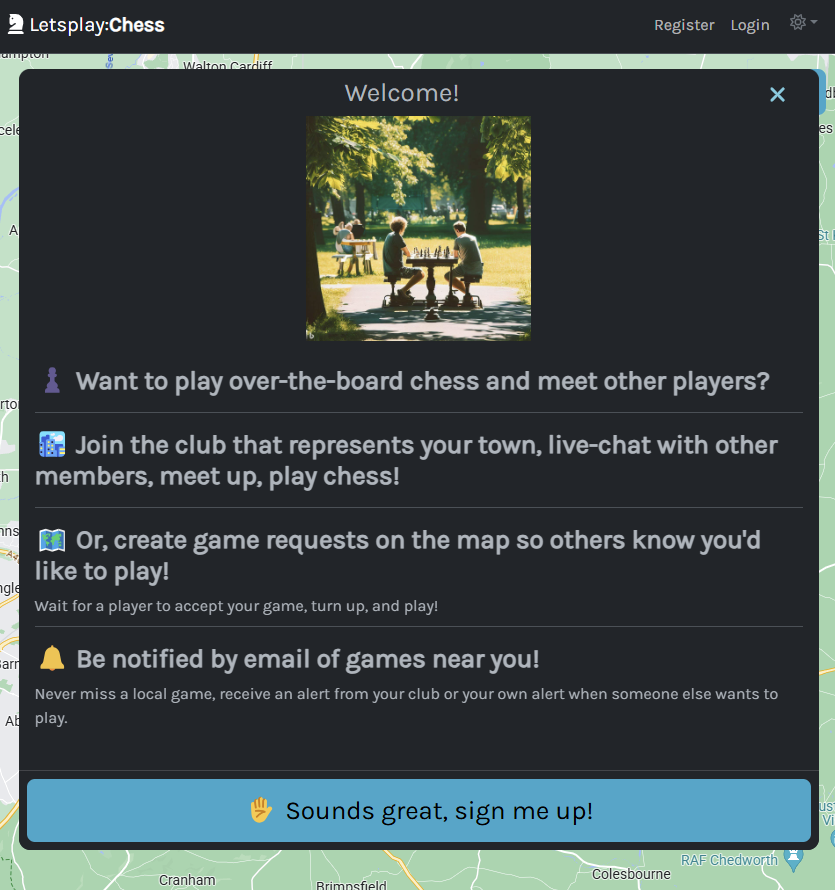
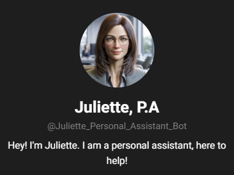

Professional Summary
Versatile Full-Stack .NET Developer with over six years of practical experience in software and web development. Since 2020, I have taken over the ongoing development and optimisation of YardandGroom, ensuring continuous improvements and robust performance on a well-established platform. My expertise spans modern UI/UX design, cloud solutions, automation, and DevOps, empowering me to tackle complex technical challenges with innovative solutions.
Career Experience
Software/Web Developer – YardandGroom
- Took over the development and ongoing maintenance of a robust .NET Core platform hosted on Azure.
- Oversee full-stack responsibilities including front-end enhancements, back-end improvements, and database automation.
- Optimised SEO performance and automated critical workflows using various Azure services.
- Integrated an advanced PayPal Checkout solution—with support for Apple Pay and Google Pay—to streamline the payment process.
- Implemented automated social media content generation to boost engagement while adhering to platform policies.
- Provided responsive customer support by efficiently resolving email inquiries.

- Developed and deployed a Stripe subscription payment system, ensuring smooth recurring transactions.
- Tested and debugged MetaTrader 5 expert advisors and indicators to maintain high performance.
- Contributed innovative ideas and provided guidance for tool development aligned with user needs.
- Crafted the front-end of a customer-ready website to facilitate product deployment.

Additional Projects
- Built an ASP.NET Core website that leverages the Google Maps API to connect chess enthusiasts for in-person meetups.
- Implemented a seamless single-page application experience and integrated a Stripe payment system for membership management.
- Developed a dynamic club system based on geographical locations, enabling users to create or join local chess clubs.

- Engineered a personal assistant AI using Azure Functions, Azure Table Storage, and the Telegram API.
- Designed interactive features where the AI proactively initiates conversations and sends task reminders.
- Achieved full Telegram integration to enhance user engagement and daily productivity.

Notable Achievements
- Revamped website design to deliver a modern, user-friendly interface and improved UX.
- Developed an intelligent employer/jobseeker matching system using database stored procedures with automated notifications.
- Streamlined social media posting by automating content generation with Azure screenshot services, significantly reducing manual workload.
- Enhanced search visibility by integrating the Google Job Post schema, boosting rankings for equestrian-related searches.
- Created automated Facebook Dynamic Ads that update weekly with the latest job listings and images.
- Optimised Azure resource usage to reduce costs by over 50% through careful performance and capacity analysis.
- Explored modern tech stacks by prototyping a React-based version of YardandGroom for potential future scalability.
- Managed the design and production of YardandGroom branded merchandise, including supplier negotiations on Alibaba.
Core Competencies
- Languages: C#, JavaScript, TypeScript, Python, HTML, CSS
-
Frameworks & APIs: .NET Core, Entity Framework, React (basic), Stripe API, PayPal Advanced Checkout
- Databases: SQL Server
-
Cloud & DevOps: Azure (Web Apps, Functions, Table Storage, App Insights), Automation, Cost Optimisation
-
Tools: Visual Studio, GitHub, VS Code, Photoshop, Umami Analytics, BoxySVG, MetaTrader 5, Google Maps API
Education
Bachelor of Science in Web Design
University of Gloucestershire, 2014 – 2017
Graduated with Second Class Honours (1st Division)